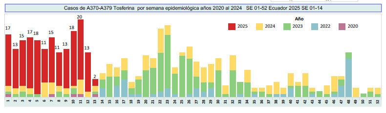

Según la OMS:
- Estadísticas A nivel mundial, se estiman 24 millones de casos anuales. Ocurren aproximadamente 160,000 muertes al año, la mayoría en países con bajo acceso a la vacunación. En países como EE. UU. y Europa, se han reportado rebrotes por falta de refuerzo en adultos. La vacunación ha reducido la mortalidad infantil en más del 90%.
